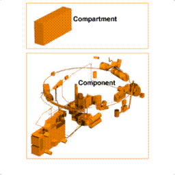

In the following sections we will examine the major types of analyses which utilize BRL-CAD geometry, presenting a brief synopsis of the capabilities, limitations, and requirements of each. Then we will discuss how these characteristics translate into demands on the geometric target description required to support each level of analysis. The selection of analysis codes considered is not intended to be all inclusive, rather an examination of the major types of analyses most often encountered. The analysis codes will be considered in somewhat of a chronological order of development.
The Vehicle Code System (VCS)[4] is the nuclear vulnerability assessment code and is used to evaluate the shielding properties of a vehicle against initial nuclear radiation. The VCS code uses a Monte Carlo module, Multigroup Oak Ridge Stochastic Experiment (MORSE)[5] code, to estimate radiation transport through the vehicle. The VCS code calculates estimates of the radiation dosage received by individual crew members, the only critical components of the target.
Target descriptions prepared for the VCS code have traditionally been the most limited and specialized. The VCS target description requirements[6] were first presented in detail in 1976. As significant advances have been made in computing power and memory, many of these restrictions no longer exist, but will be presented for completeness. The most restrictive condition was the limitation on the number of primitives allowed. In the late 1970s, nuclear target descriptions were limited to 600 primitives, preferably less than 300. This size restriction had several implications, the obvious being the amount of detail, which had to be used judiciously. Components with like attenuation characteristics had to be combined, while other components such as the hull, turret, suspension, and main armament had to be modeled in low detail. Larger components which would offer significant shielding, such as stowed ammo, also had to represented, but as an aggregate volume.
The size restrictions of the VCS code no longer exist; however, there are some requirements that still must be considered when preparing a VCS target description. An accurate description of the armor shell is required. Armor thickness is important, but unlike ballistic models, the obliquity angles are less critical. Still, since the target description may be used for other purposes, accurate obliquity angles should be modeled. The exterior shell should include areas where radiation particles may gain entrance. This means that detail and clearances are important in areas such as hatches, sighting devices, and air intake and exhaust grills and vents. All critical components that could be affected by radiation, including the crew, should be included. Likewise, all major internal components that provide shielding, must be represented. All internal air must be modeled as a regular component. Finally, the complete target must be enclosed in an external air region, sitting on a region representing the ground.
The compartment-level vulnerability methodology was the first approach to V/L assessment and, as mentioned earlier, was the driving force behind the development of geometric modeling and ray-tracing. There were two early compartment-level V/L codes, one for kinetic energy warheads and one for chemical energy (shaped charge) warheads. In 1979, these codes were combined into the VAMP[7] code. The compartment-level codes are the least sophisticated of the V/L codes. True to their name, these codes consider the target as a series of compartments contained within an armored shell. Penetration calculations are matched against the armor defeat criteria. Upon perforation, the residual energy (represented by a hole size) is used to predict damage from a compartment kill curve. The only internal components that are considered on an individual basis are those that would contribute to a catastrophic kill (K-kill) of the vehicle.
There are several important considerations when preparing a compartment-level target description. The armor shell must be described as accurately as possible since the thickness and obliquity angle are crucial in penetration calculations. Other exterior components that would affect penetration, such as the main gun, suspension components, and roadwheels, must be represented.
Figure 5. Exterior of a Compartment-Level Description
is a rendering of the exterior of a compartment-level description.
The complete interior volume within the armor shell must be modeled and divided into compartments. The compartments of interest are the crew, engine, and ammo. Defining these compartments is accomplished by modeling air regions and assigning differentiating "air codes". There must not be any space between the inner surface of the armor and the air regions (compartments). There is interior space that must not be included as part of the crew, engine, or ammo compartments. These areas, such as between the hull belly and the floor and between the armor wall and an adjacent fuel tank, are modeled and identified as separate compartments.
Figure (6) shows these "compartment air regions" along with the enclosing armor shell. Any K-kill component, such as fuel tanks and stowed ammo, must also be represented. In addition, large shielding components, such as engines and transmissions, are usually modeled at a low level of detail. Other interior components need not be modeled.Figure 6. Air Regions Representing Internal Compartments.
Figure (7) depicts the interior detail of a compartment-level target description.Figure 7. Interior of a Compartment-Level Description.
The component-level vulnerability codes represent the next level of complexity in that the target is analyzed at the individual component level. The first such code was known as the VAREA[8] code and was used for lightly armored vehicles, trucks, etc. The COVART[9] family of codes performs similar tasks for aircraft. These codes compute the vulnerability estimates in terms of vulnerable areas for specific penetrators, usually fragments and small caliber direct fire weapons. This methodology requires component conditional kill probabilities given a hit for every critical component. The vulnerable area of the target from a specific view is the sum of all the individual grid-cell vulnerable areas. The grid-cell vulnerable areas are determined by calculating a cell probability of kill and multiplying it by the area of the cell. The view vulnerable area data are presented in a table for the various fragment mass and velocity combinations.
It is no surprise that the geometry requirements for the VAREA codes shifted emphasis to the individual component. The exterior shell must continue to be modeled as accurately as possible. Other exterior components must include any critical components plus any component that could contribute to a K-kill. Any exterior component should also be included if it provides any significant shielding or affects the penetration capability of the warhead.
Figure 8 shows the detail of the exterior of a component-level target description. All critical internal components must be modeled in enough detail to support a component kill analysis. The component conditional kill analysis uses presented areas of the component from several aspects, ratioing projected areas of sensitive regions with the total presented area. Thus, the presented area of the model of the component should accurately represent the real component. Any other noncritical internal component that provides effective ballistic shielding should also be included. At this level, components such as wiring harnesses and fuel and hydraulic lines are generally modeled.Figure 8. Exterior of a Component-Level Description.
Figure 9 is a rendering of the internal components of a component-level target description.Figure 9. Interior of a Component-Level Description.
The point burst assessment codes are simply an extension of the VAREA level codes, except the damage resulting from behind-armor debris (or spall) is explicitly estimated. Parallel shotlines are used to simulate the main penetrator while divergent shotlines (or spall rays) simulate the spall debris. The spall rays are initiated whenever a burst point is encountered along the path of a main penetrator. A burst point is defined whenever a main penetrator exits an armor component directly into an interior volume. The first point burst V/L code was the VAST[10] code, which evaluated kinetic energy and shaped charge warheads versus tanks. In 1988, a stochastic point burst V/L code called SQuASH[11] was introduced and represents a significant improvement in armored vehicle vulnerability modeling.
The geometry requirements necessary to support a point burst V/L analysis are nearly identical to the VAREA requirements as far as the components are concerned. The one major difference is the need to identify burst points. Recall, burst points are located on the inner surface of armor components that are adjacent to interior volume. Hence, to locate the burst points it is necessary to know when one has entered the interior. As in the compartment analyses, this is accomplished by representing all interior volume as air regions and then identifying those where spall rays should be initiated. Note that one should avoid any "undefined" volume between the exterior shell and the air regions, or the burst points could be missed. Figures 10 through 13 are used to compare the detail of several subsystems of compartment-level and component-level target descriptions.
Figure 10. Compartment-Level and Component-Level Gun System.
Figure 11. Compartment-Level and Component-Level Fuel System.
Figure 12. Compartment-Level and Component-Level Electrical System.
Figure 13. Compartment-Level and Component-Level Power Train.
For many years, spare parts for military systems were stocked according to life expectancies and mean-time- between-failures in a peacetime environment. Little consideration was given to parts likely to be damaged in battle. In the early 1980s, the SPARC (Sustainability Predictions for Army spare component Requirements for Combat) program was started to address this oversight. The SPARC[12] code was developed to quantify spare parts requirements in support of combat damage repair. The SPARC methodology is really an adaptation of the point burst methodology and, therefore, accounts for damage from both the main penetrator and spall debris. The major difference was the introduction of the concept of the mission-essential component, a more inclusive classification than the standard V/L critical component. Any component whose loss would require repair or replacement either to prevent damage to other components or to maintain long-term operational readiness and reliability is considered mission essential.
SPARC target description requirements are basically the same as the point burst V/L analysis, except for the concept of mission-essential components. All components that would be considered critical in a point burst analysis are also considered mission essential. However, noncritical components may become mission essential if they must be replaced when damaged to maintain long-term operational status. For example, consider the third roadwheel of a tracked vehicle. This roadwheel is not considered V/L critical since the vehicle is still functional when the roadwheel is damaged. However, this damaged roadwheel could lead to problems with other suspension components such as torsion bars and the track and is, therefore, considered a mission-essential component for a SPARC analysis. All mission-essential components, even redundant components, must be uniquely identified. It is necessary, therefore, to assure that the regions used to model a component are uniquely identified, and any other occurrence of that component must be distinguished from others.
This methodology predicts Synthetic Aperture Radar (SAR) images by ray-tracing the geometric model. At every intersection with the geometry, the ray is reflected in another direction according to the surface geometry and appropriate physical laws. This process is continued until the ray is reflected back to the sensor or leaves the scene.
The geometry requirements for a SAR analysis are quite different than those discussed up to this point. If the target exterior is completely conducting (i.e., metal), then no internal components are required. However, if portions of the exterior shell (or any exterior component) are comprised of nonconducting material (e.g., glass, plastic, etc.), then appropriate internal components should be modeled. Likewise, hubs and rims should be modeled in detail as rubber is also transparent to radar. Generally though, all the detail is concentrated on the exterior surface. Since surface normals and curvature information are required, the exterior shell must be as accurate as possible. Curved surfaces must be modeled as such and as faithfully as possible. Thicknesses are unimportant, but if known should be modeled accurately. All exterior accessories should be modeled and in great detail. Components such as headlights, taillights, hinges, handles, braces, supports, large bolt heads, and individual track links should be included in the model. Even rounded corners should be considered for larger components such as external fuel tanks. This detail is required since any condition that might possibly give a SAR return (e.g., a small corner reflector) should be geometrically modeled. Figures 14 and 15 are exterior views of a SAR-level target description with several areas of detail highlighted.

Figure 14. Example of a SAR-Level Target Description.

Figure 15. Example of a SAR-Level Target Description.
The InfraRed (IR) methodology is designed to predict surface temperatures of targets. The Physically Reasonable Infrared Signature Model (PRISM)[13] code is one of several such codes in use today. The PRISM code is a lumped parameter finite difference model which requires that geometric regions be represented as nodes. Thus, conversion processes are required to prepare a CSG model for input to this thermal model. The conversion process uses the geometry to create the nodal inputs (see Figure 16). Afterwards, the geometry is again referenced to display the resulting thermal predictions. The Faceted Region EDitor (FRED)[14] and the IRPREP[15] are two such codes designed to convert BRL-CAD geometric models for input to the PRISM code.
The thermal prediction models do place several unique requirements on the target description. The heat flow analysis requires that the CSG regions be isothermal. This means portions of the exterior shell of a vehicle, that would be modeled as one region for ballistic V/L analyses, may now need to be divided into a number of smaller regions to reduce temperature variance over the regions. PRISM requires that any region have only one surface normal. To accommodate this requirement, during the conversion, the surface normals are averaged over the region; hence, a large region with numerous surface normals should be divided into smaller regions. For example, if the turret of a tank is modeled as one large region, there will be only one surface normal associated with the whole turret (see Figure 17). As in the compartment and point burst V/L descriptions, the internal volume must be modeled as air regions. The only interior components required are those comprising the engine and air intake and exhaust ducts. All these requirements are further explained in the IRPREP reference.Figure 16.

Figure 17. Sliced Turret to Produce Different Normals.


{kind=link}